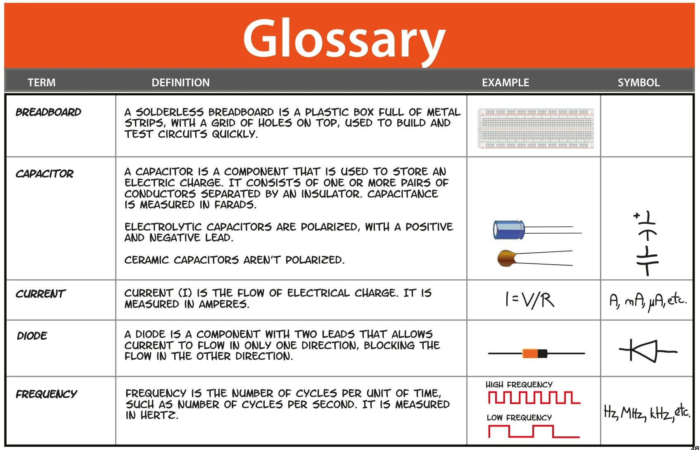
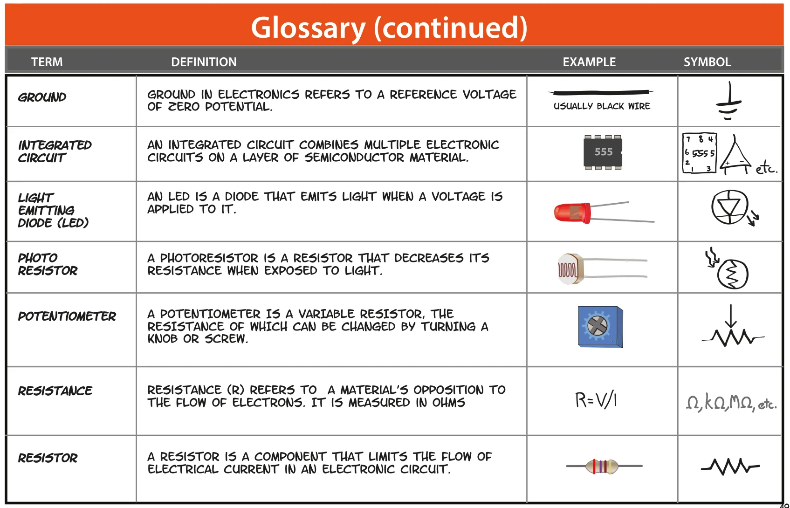
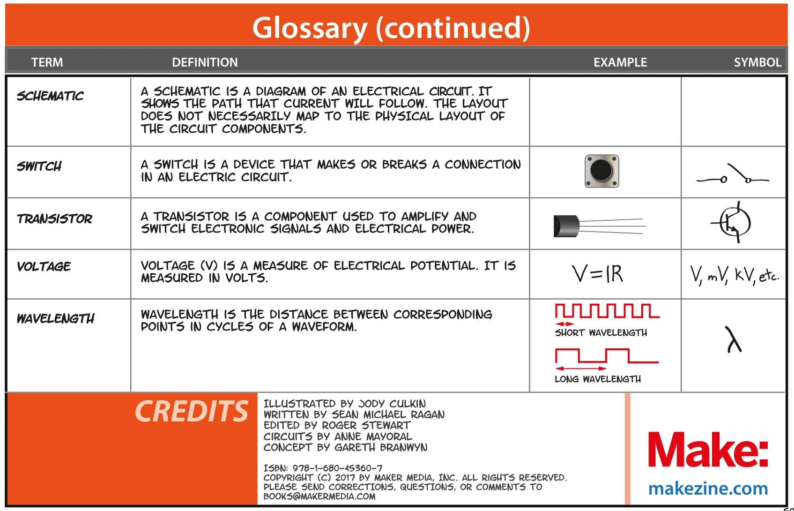

| Breadboard | A solderless breadboard is a plastic box full of metal strips, with a grid of holes on top, used to build and test circuits quickly. |
|---|---|
| Capacitor | A capacitor is a component that is used to store an electric charge. It consists of one or more pairs of conductors separated by an insulator. Capacitance is measured in farads. Electrolytic capacitors are polarized, with a positive and negative lead. Ceramic capacitors aren’t polarized. |
| Current | Current (I) is the flow of electrical charge. It is measured in amperes. |
| Diode | A diode is a component with two leads that allows current to flow in only one direction, blocking the flow in the other direction. |
| Frequency | Frequency is the number of cycles per unit of time, such as number of cycles per second. It is measured in hertz. |
| Ground | Ground in electronics refers to a reference voltage of zero potential. |
| Integrated circuit | An integrated circuit combines multiple electronic circuits on a layer of semiconductor material. |
| Light-emitting diode (LED) | An LED is a diode that emits light when a voltage is applied to it. |
| Photoresistor | A photoresistor is a resistor that decreases its resistance when exposed to light. |
| Potentiometer | A potentiometer is a variable resistor, the resistance of which can be changed by turning a knob or screw. |
| Resistance | Resistance (R) refers to a material's opposition to the flow of electrons. It is measured in ohms |
| Resistor | A resistor is a component that limits the flow of electrical current in an electronic circuit. |
| Schematic | A schematic is a diagram of an electrical circuit. It shows the path that current will follow. The layout does not necessarily map to the physical layout of the circuit components. |
| Switch | A switch is a device that makes or breaks a connection in an electric circuit. |
| Transistor | A transistor is a component used to amplify and switch electronic signals and electrical power. |
| Voltage | Voltage (V) is a measure of electrical potential. It is measured in volts. |
| Wavelength | Wavelength is the distance between corresponding points in cycles of a waveform. |
Original glossary pages (with example pictures and schematic symbols)


